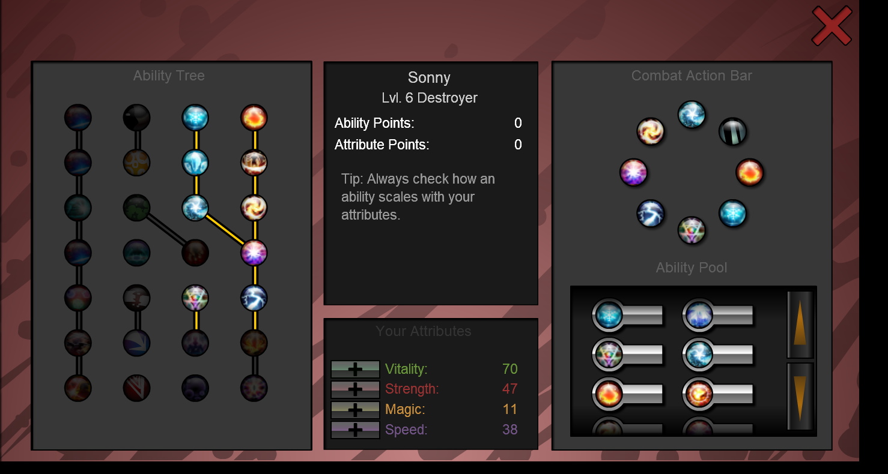
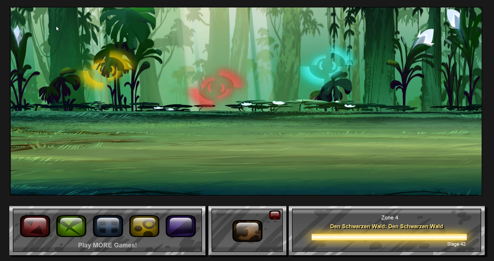
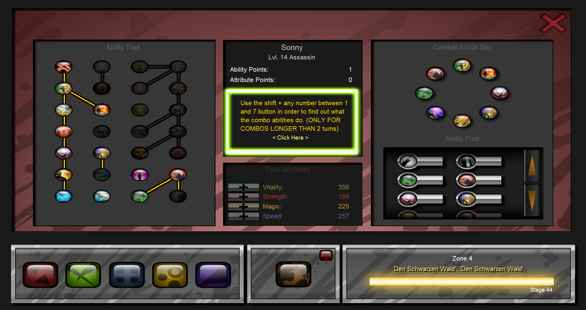
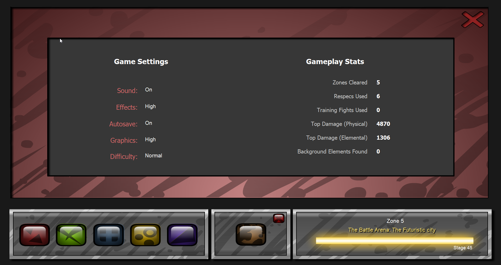

Game: Sonny 1
Version: 1.7.0
Release Date: 10.11.2024
File Size: 139 MB
Daniela's WIll
Mod Name : Daniela's WIll Release Date: 10.11.2024
What's this Mod?
This Mod changes/adds many things like:
- enemies
- allies
- (etc.)
- all classes
- adds one new zone
- new mechanics (like: team checker, aoe, multi hit living dead, undead enemies, multiple buffs
- per ability, one button combos and more)
- new themes + sound effects (mostly from FFXIV)
- new bosses between zones (in zone 2 & 3)
- new items
- new upgrade types; Some abilities for example Assasinate from the Assasin tree changes at the 3rd upgrade to Dream Within a dream, changing it from a normal attack into a threefold attack (meaning it strikes 3 times, also the ability icon + sound effect changes)
- 5 ability starting points
- 2 statpoints per Level
- new battle area (forest)
- Infinity changed into the Battle Arena
- Hard difficulty (can be changed from the settings) Hard difficulty may change some late game Bosses.
Code
The code is available in the Github. Specifically under the branch main Dont copy the code! You can ask questions if you like about the functions I can help you implementing stuff. Discord is vastolorde3
📸 Screenshots




⬇ Download
⬇ Download Now (139 MB)
Version 1.7.0
📋 Updates History & Bugs & Planned Changes
- 10.11.2024 - Initial release 17.11.2024 - Changed how Close Caloric is counted. Fixed an issue wherein Wicked Thunder adds may use Electrope Strike at the wrong time the second time you see that mechanic. Fixed an issue wherein Aero in Green, Water in Blue, Water in blue 2, Aero in Green 2 where usable while you where under the effect of Subtractive Palette. 29.12.2024 - Changed how Subtractive Palette counts down, which fixed an issue when both Sonny and Catelin have Subtractive Palette on 18.02.2025 - Changed Gligus entirely; Moveset entirely reworked; Stats are the same; 19.04.2025 - Fixed some issues regarding Gligus. 01.05.2025 - Fixed Living Dead Text. 02.06.2025 - Changed left part of Destroyer and right part of Guardian. Changed Ambers 3 fold attack into 1 but increased the potency of it to 375%. Changed the A.I. so that it doesnt attack units with 0 hp (for the Dark Channeler, Channeler fight) Bugs: If there are any bugs please report them!Known issues: During the Honey b. lovely fight she may cast the wrong ability during the wrong turn.